Daily Graphs
Each graph puts two things side by side and asks a question. New graphs are posted by day, and the newest day is at the top. Scroll down to go back in time. Click a graph to enlarge it, and open a tile for the story behind it.
Phone Watch A running count of people on their phones, seen through public street webcams in cities across Asia, Europe, the Americas and Australia. Guess first, then see the numbers.Friday, November 27, 2026
1 graph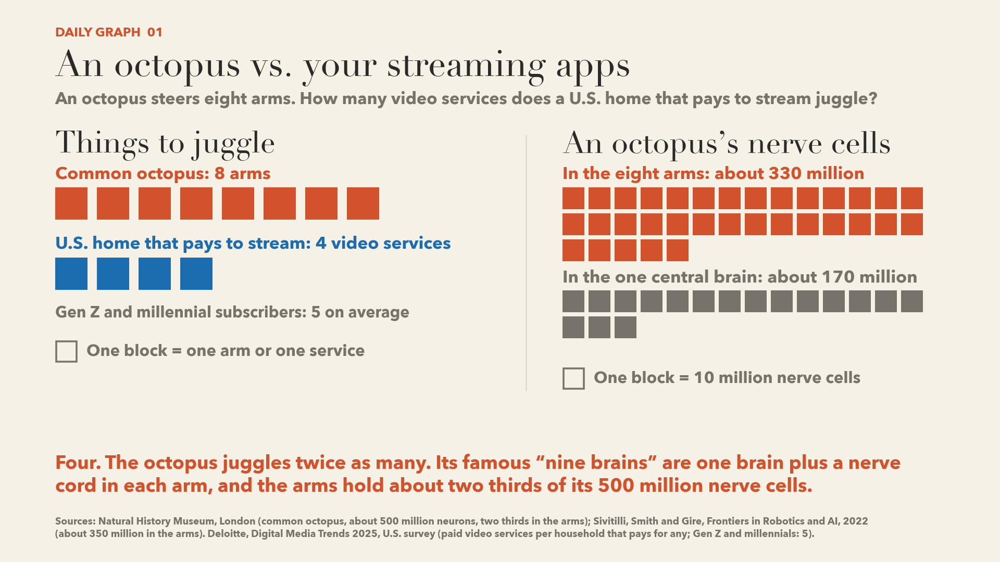
An octopus vs. your streaming apps
What am I looking at?
A common octopus has eight arms, and a U.S. home that pays to stream video pays for four services on average. So the octopus has twice as many things to control. The streaming number comes from a Deloitte survey of 3,595 U.S. adults in October 2024. It counts only paid video services, and only in homes that pay for at least one.
The octopus number comes from brain research. A common octopus has about 500 million nerve cells, and about two thirds of them sit in the arms. The rest sit in the central brain, which wraps around the tube that carries food to the stomach. These counts are estimates, so one study puts about 330 million cells in the arms and another puts about 350 million there.
People often say that an octopus has nine brains. Scientists describe one central brain plus a nerve cord down the middle of each arm. Each cord helps its arm feel and move, and the central brain can still direct the arm. So each of the other eight "brains" is a nerve cord.
Words on this graph
- Neuron
- A neuron is a nerve cell. Neurons carry signals through the body as small electrical pulses.
- Nerve cord
- A nerve cord is a thick bundle of nerve cells and nerve fibers. In an octopus, one nerve cord runs down the center of each arm.
- Paid streaming service
- This is a video service that people pay for each month, like Netflix or Disney+. Researchers call it SVOD, which means subscription video on demand.
- Survey average
- Researchers ask many people a question and add up the answers. Then they divide by the number of people. Some homes pay for one service and some homes pay for eight services, but the average is four.
Want to know more?
- Octopuses keep surprising us - here are eight examples howmuseumNatural History Museum, London. The 500 million neurons, the two thirds in the arms, and the experiment where the central brain guides one arm.
- Lessons for Robotics From the Control Architecture of the OctopusscholarlyFrontiers in Robotics and AI (Sivitilli, Smith and Gire, 2022). Neuron counts for the arms and the central brain, and how the nerve cord in each arm works.
- Neuronal segmentation in cephalopod armsscholarlyNature Communications (Olson, Schulz and Ragsdale, 2025). New research on how the nerve cord in each octopus arm is built in segments.
- The Mind of an OctopusjournalismScientific American (Peter Godfrey-Smith, 2017). A philosopher of science on why octopus arms seem to think for themselves.
- 2025 Digital Media TrendsprimaryDeloitte Insights. The U.S. survey behind the four paid video services, with costs and frustrations of streaming.
Thursday, November 26, 2026
1 graph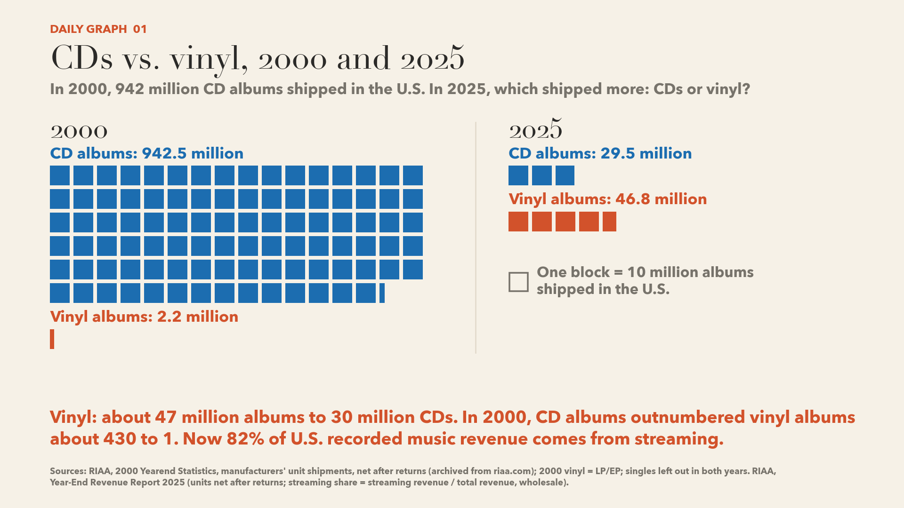
CDs vs. vinyl, 2000 and 2025
What am I looking at?
In 2025, U.S. music companies shipped more vinyl albums than CD albums: 46.8 million records to 29.5 million CDs. In 2000, the picture was the other way around. That year they shipped 942.5 million CD albums and 2.2 million vinyl albums, so CDs led by about 430 to 1. That is the highest yearly CD album number in the RIAA tables.
The numbers come from the RIAA, the group that speaks for U.S. record companies. It counts the albums that companies send out to stores, websites and other sellers. Then it takes away the albums that come back unsold. Singles are left out in both years, so the graph compares albums with albums.
Most of the money now comes from a different place. In 2025, streaming brought in 82% of all U.S. recorded music money. Sales of vinyl are growing, but they are still a small part of the business. Each album count on this graph is a net shipment.
Words on this graph
- Net after returns
- This is the number of items a company sends to sellers, minus the items the sellers send back.
- Wholesale
- This is the price a seller pays the record company, not the price a fan pays in the shop. The RIAA now reports money at wholesale prices.
- Album
- Here this means a full-length record or CD. Singles with one or two songs are counted in a different line.
Want to know more?
- Year-End Recorded Music Revenue Report 2025primaryRecording Industry Association of America (RIAA). The 2025 table: vinyl and CD units, streaming money and total revenue.
- RIAA Reports: US Recorded Music Annual Revenue Achieves New High of $11.5 Billion in 2025primaryRIAA. RIAA's own summary of 2025, including vinyl's lead over CDs and the 82% streaming share.
- US Revenue DatabaseprimaryRIAA. Every format by year, with definitions of what counts as a vinyl album, a CD and other physical formats.
- 2000 Yearend Statistics: Manufacturers' Unit Shipments and Dollar ValueprimaryRIAA, archived by the Internet Archive. The 2000 numbers: CD albums, CD singles, LPs, vinyl singles and cassettes, 1991 to 2000.
- For the first time since 1987, vinyl records outsell CDsjournalismNPR. The year vinyl albums passed CDs again, and what was driving it.
- Compact discoverviewWikipedia. How the CD began in 1982 and how its sales fell after 2000.
Wednesday, November 25, 2026
1 graph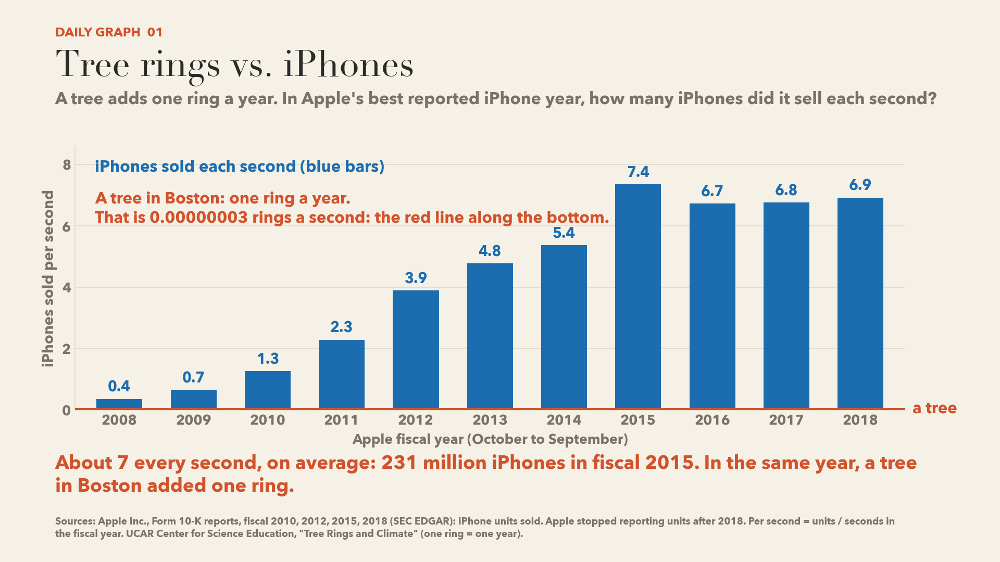
Tree rings vs. iPhones
What am I looking at?
In fiscal 2015, Apple sold about 7 iPhones every second on average, while a tree in Boston added one growth ring for the whole year. Apple reported 231 million iPhones that year, its best reported iPhone year. The company stopped giving unit numbers after fiscal 2018.
To get the rate, divide the phones sold by the seconds in the fiscal year. Apple's year ends on the last Saturday of September. Sales are not even across the year. Many more phones sell in the holiday months, so the number is an average.
A tree ring forms because a tree grows fast in spring and slowly in late summer. Places with clear seasons, like Boston, show one ring for each year. In a very bad year a tree can skip a ring or grow an extra one, so scientists compare many trees before they name a date. Tropical trees grow all year and show no clear rings.
One year of a tree's life becomes one thin band of wood. That band is a tree ring.
Words on this graph
- Fiscal year
- This is a company's business year of 12 months. Apple's fiscal year runs from late September to late September, not January to December.
- Unit sales
- This is the number of products a company sells, counted one by one, not in dollars.
- Tree ring
- This is a layer of wood that a tree adds in one growing season. In places with clear seasons, one ring means one year.
Want to know more?
- Apple Inc. Form 10-K, fiscal 2015primaryU.S. Securities and Exchange Commission (EDGAR). Apple's own annual report: 231,218 thousand iPhones sold in fiscal 2015 and how its fiscal year is defined.
- Apple Inc. Form 10-K, fiscal 2018primaryU.S. Securities and Exchange Commission (EDGAR). The last annual report with iPhone unit sales, covering 2016 to 2018.
- Tree Rings and ClimateexplainerUCAR Center for Science Education. How a tree forms one ring each year and why tropical trees do not show clear rings.
- Skeleton Plotting: Absent and False RingsscholarlyUniversity of Arizona, Laboratory of Tree-Ring Research. What happens when a tree skips a ring or grows an extra one, and how scientists find the right year.
- Apple will stop reporting unit sales for iPhone, iPad and Macjournalism9to5Mac. Why the series ends in 2018: Apple's announcement and its reasons.
- DendrochronologyoverviewWikipedia. An overview of tree-ring dating and how it is used in science and history.
Tuesday, November 24, 2026
1 graph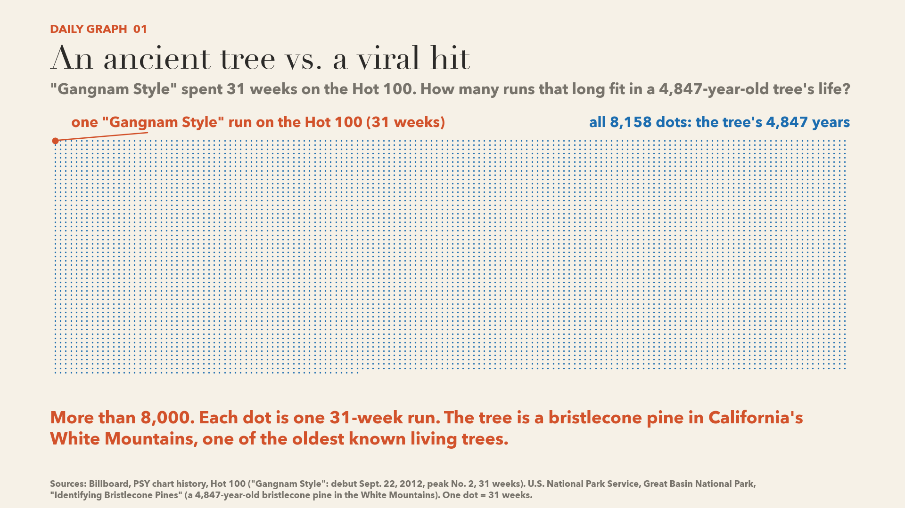
An ancient tree vs. a viral hit
What am I looking at?
A bristlecone pine in California has lived through more than 8,000 runs as long as the one "Gangnam Style" had on the charts. The song stayed on the Billboard Hot 100 for 31 weeks in 2012 and 2013. The tree was 4,847 years old when park scientists reported its age.
Bristlecone pines grow high in the White Mountains, where the air is cold and dry and the soil is poor. They grow very slowly, and their wood is hard and full of resin. This makes it difficult for insects and disease to harm them.
Scientists count the rings inside a thin core of wood to learn a tree's age. Each ring is one year of growth. Another tree nearby may be older, so the graph calls this one of the oldest known living trees.
Each small dot on the graph is one 31-week chart run. The whole field of dots is the life of a single tree.
Words on this graph
- Billboard Hot 100
- the main weekly list of the most popular songs in the United States, based on sales, streams and radio play.
- Bristlecone pine
- a small, slow-growing pine tree of the western United States that can live for thousands of years.
- Tree ring
- a layer of wood that a tree adds each year, so the number of rings is its age.
Want to know more?
- Identifying Bristlecone PinesprimaryU.S. National Park Service, Great Basin National Park. The 4,847-year-old tree, the newer 5,065-year claim, and how to recognize a bristlecone.
- PSY Chart History: Billboard Hot 100primaryBillboard. The chart record for "Gangnam Style": debut date, peak position and 31 weeks.
- Pinus longaevaoverviewWikipedia. An overview of the species, where it grows, and how its age is measured.
Monday, November 23, 2026
1 graph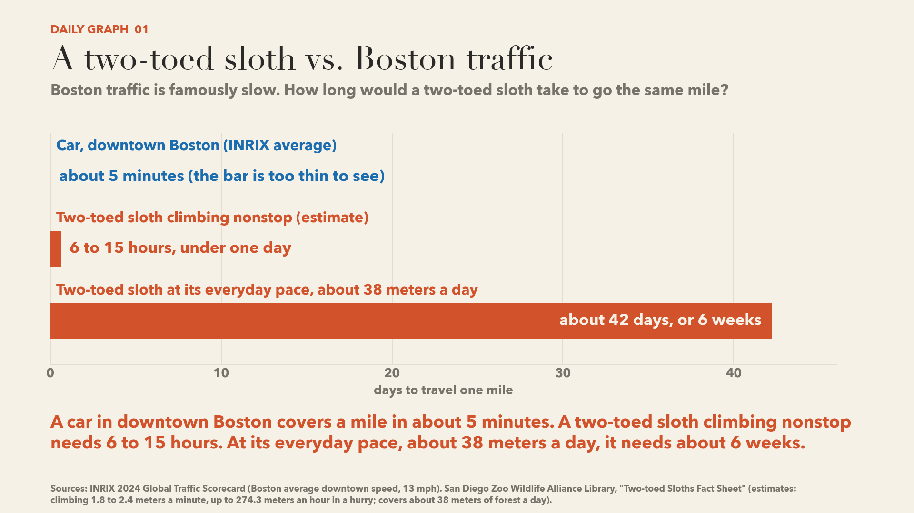
A two-toed sloth vs. Boston traffic
What am I looking at?
A car in downtown Boston covers one mile in about five minutes, and a two-toed sloth needs about six weeks. These animals live in the rainforests of Central and South America. They eat leaves, which give them very little energy, so they move slowly and save every calorie.
A zoo fact sheet says a sloth can climb a few meters a minute, a little faster when it is in danger. If it climbed without stopping, one mile would take 6 to 15 hours.
But a sloth rests most of the day and travels only about 38 meters, so the real trip would take about 42 days. Scientists have measured sloth speed only a few times, and the numbers differ. That is why the graph calls the climbing speed an estimate.
Words on this graph
- Downtown speed
- the average speed of cars in the center of a city, as reported by the traffic data company INRIX.
- Two-toed sloth
- a tree animal from Central and South America with two claws on each front foot.
- Estimate
- a careful guess when exact measurement is not possible.
Want to know more?
- 2024 INRIX Global Traffic Scorecard: USprimaryINRIX. The table with Boston's 13 mph downtown speed and its hours lost to traffic.
- Global Traffic ScorecardprimaryINRIX. The newest scorecard, comparing traffic in more than 900 cities.
- Two-toed Sloths Fact Sheet: Behavior and EcologymuseumSan Diego Zoo Wildlife Alliance Library. The climbing speeds, the 38-meter daily distance, and the sloth's nightly habits.
- SlothoverviewWikipedia. An overview of both sloth families, their diet, and why they move slowly.
Saturday, November 21, 2026
1 graph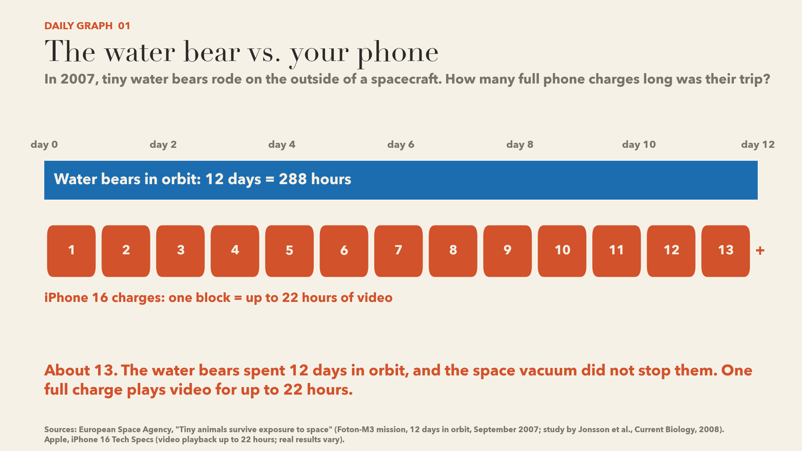
The water bear vs. your phone
What am I looking at?
Water bears spent 12 days in orbit in 2007 and many of them came back alive. Water bears, also called tardigrades, are tiny animals about one millimetre long. They live in moss, soil and small drops of water. When they dry out, they curl up and slow their bodies almost to a stop. In September 2007, about 3000 of them flew on a European science capsule called Foton-M3. They sat in a box on the outside of the capsule, and the lid opened to space for part of the trip. Scientists in Sweden and Germany woke them up back on Earth. The animals that faced only the empty space survived as well as animals that stayed on the ground. Strong sunlight was harder, and only some of the animals in direct sun recovered. A phone needs a charger every day, but a dry water bear needs nothing. Biologists call this dry, paused state anhydrobiosis.
Words on this graph
- Tardigrade
- the common name is water bear. It is a tiny eight-legged animal that lives in wet moss and soil, and scientists call it a tardigrade.
- Anhydrobiosis
- a state where an animal loses almost all its water and its body nearly stops. It can wake up again when water comes back.
- Vacuum
- a space with almost no air. Outer space is a vacuum, so water leaves a body very fast there.
- Up to 22 hours
- in Apple's tests, real use is usually shorter than this. It is the longest video time Apple measured on one full charge.
Want to know more?
- Tiny animals survive exposure to spaceprimaryEuropean Space Agency. The mission page: 3000 water bears, 12 days, the box on the outside of the capsule.
- Tardigrades survive exposure to space in low Earth orbit (Current Biology, 2008)scholarlyCell Press. The original study by Jonsson and colleagues.
- Tardigrades survive exposure to space in low Earth orbit (record and abstract)scholarlyGerman Aerospace Center (DLR) elib. Free abstract: vacuum alone did not lower survival; sunlight plus vacuum was harder.
- iPhone 16 Tech SpecsprimaryApple. Where the 22-hour video number comes from, with Apple's testing footnotes.
- TardigradeoverviewWikipedia. Overview of the animal, its body and where it lives.
Friday, November 20, 2026
1 graph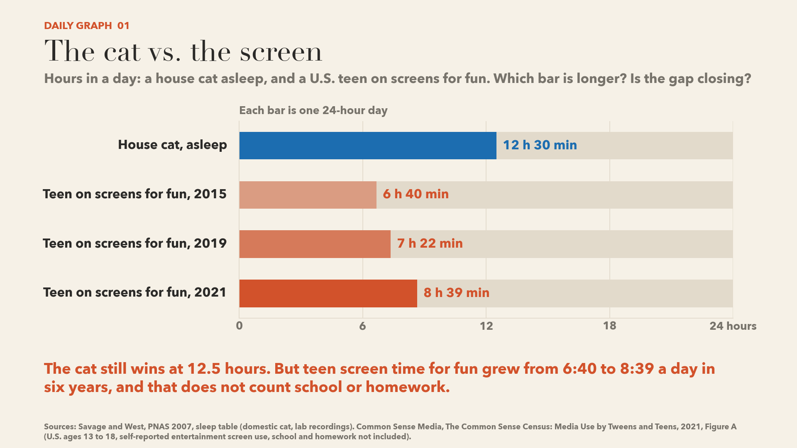
The cat vs. the screen
What am I looking at?
A lab cat sleeps about 12.5 hours a day, and in 2021 a U.S. teen spent about 8.7 hours on screens for fun. The cat number comes from a table of sleep times for many mammals, published in 2007. Scientists measured sleep in a lab, so a pet cat at home may sleep a little more or less.
The teen numbers come from a survey by Common Sense Media. Teens aged 13 to 18 said how much time they spent on screens each day. The survey counted time on things like videos and games. It did not count school or homework. From 2015 to 2021, the daily total grew by about two hours.
The 2021 survey ran during the pandemic, when many teens stayed at home. The graph puts two numbers side by side. It does not show that one causes the other. Teens report their own hours, so this is a self-reported measure.
Words on this graph
- self-reported
- Self-reported means people answer questions about themselves. Teens guessed their own hours, so the numbers may be a little too high or too low.
- entertainment screen use
- Entertainment screen use is screen time for fun, such as videos, games and social media. Time for school or homework is not part of it.
- lab recording
- A lab recording measures sleep with machines in a lab. It is exact, but a pet at home may sleep a different amount.
Want to know more?
- The Common Sense Census: Media Use by Tweens and Teens, 2021 (full report)primaryCommon Sense Media. Figure A has the three teen numbers and the definition.
- The Common Sense Census: Media Use by Tweens and Teens, 2021primaryCommon Sense Media. Summary page for the survey.
- msleep: sleep times for 83 mammals (data file)scholarlyggplot2 / tidyverse, GitHub. The table row with the domestic cat at 12.5 hours.
- An updated version of the mammals sleep datasetexplainerggplot2 documentation. Explains each column and credits Savage and West 2007.
- Cat behavioroverviewWikipedia. Overview of how and when cats sleep.
Thursday, November 19, 2026
1 graph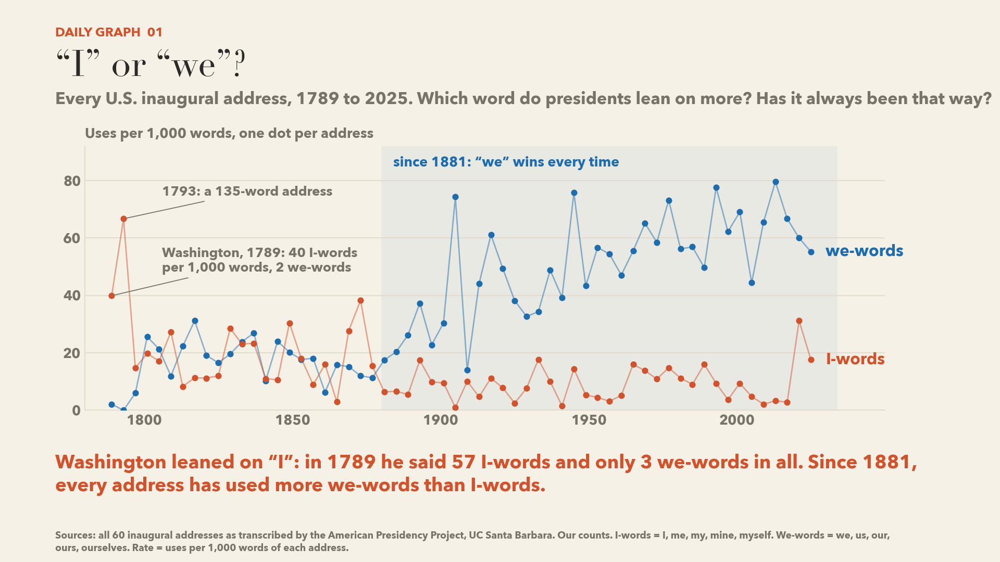
“I” or “we”?
What am I looking at?
Since 1881, every U.S. inaugural address has used more we-words than I-words. We counted the words in all 60 addresses, using the texts from the American Presidency Project. I-words are forms of I, such as me and my. We-words are forms of we, such as us and our. George Washington used 57 I-words and only 3 we-words in 1789. He spoke about his own doubts and his duty. Between 1797 and 1877, the two lines cross many times, so no single pattern holds. After 1881, the we-line stays on top. Since about 1900 it has often been three or four times higher. A count shows which words a speaker chose, but it does not show why. A president can use we to mean the whole country, the government, or only his own team. Researchers study this choice as a way to build a shared group identity.
Words on this graph
- rate per 1,000 words
- A rate per 1,000 words lets us compare a short speech with a long one. We divide the count by the length of the speech and multiply by 1,000.
- inclusive we
- An inclusive we puts the listener inside the group. A line like "we must act" asks the audience to share the task.
- inaugural address
- An inaugural address is the speech a president gives on the first day of a new term.
Want to know more?
- Inaugural AddressesprimaryThe American Presidency Project, UC Santa Barbara. Every inaugural address, the texts behind the counts.
- Inaugural Address, April 30, 1789 (George Washington)primaryThe American Presidency Project. Read the speech with 57 I-words and 3 we-words.
- Inaugural Address, January 20, 2025 (Donald J. Trump)primaryThe American Presidency Project. The most recent address on the graph, for comparison.
- The Inaugural Speech: An Exploratory Study of the Leader's Use of Relationship Pronouns (Greiner, 2002)scholarlyERIC, US Department of Education. An earlier study of we, us and our across inaugural addresses.
- The Presidential WejournalismReason. A separate count of first-person plural words in every inaugural, with a jump in 1905.
Wednesday, November 18, 2026
1 graph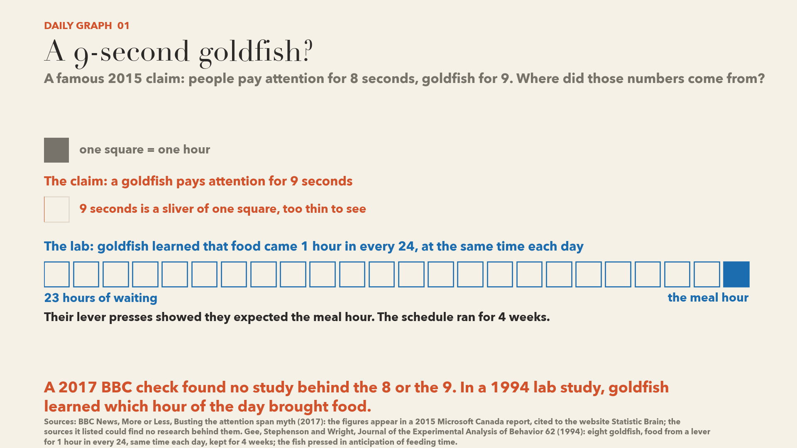
A 9-second goldfish?
What am I looking at?
No study backs the claim that a goldfish pays attention for nine seconds. The number spread in 2015 through a Microsoft Canada report, which said people now focus for eight seconds, one less than a goldfish. In 2017 a BBC radio team traced the figures to a website called Statistic Brain. The sources that site listed could not find any research behind them. Experts on attention also said there is no single average attention span, because focus depends on the task. A 1994 lab study tested something different: memory for time. Eight goldfish learned to press a lever for food. Food came for only one hour each day, always at the same time, for four weeks. The fish pressed the lever as the meal hour came near, so they had learned when to expect it. That is memory for a daily pattern, not a measure of attention. No one has measured a nine-second goldfish attention span.
Words on this graph
- attention span
- Attention span is how long a person or animal keeps focus on one task. Researchers say it changes with the task, so one number for everyone does not make sense.
- temporal discrimination
- Temporal discrimination means telling one time from another. In the lab study, the fish showed they could tell the meal hour from the other hours of the day.
- operant learning
- Operant learning is learning from what happens after an action. A fish presses a lever, gets food, and presses more often.
- extinction
- Extinction is the part of a learning study when the reward stops. Scientists watch how long the learned habit continues without it.
Want to know more?
- Busting the attention span mythjournalismBBC News (More or Less). Traces the 8 and 9 second figures and finds no research behind them.
- Temporal discrimination learning of operant feeding in goldfish (abstract)scholarlyPubMed, US National Library of Medicine. The 1994 study in one paragraph.
- Temporal discrimination learning of operant feeding in goldfish (full text)scholarlyPubMed Central / Journal of the Experimental Analysis of Behavior. The full paper, with the lever data day by day.
- Attention spanoverviewWikipedia. Overview of how researchers think about attention span.
Tuesday, November 17, 2026
1 graph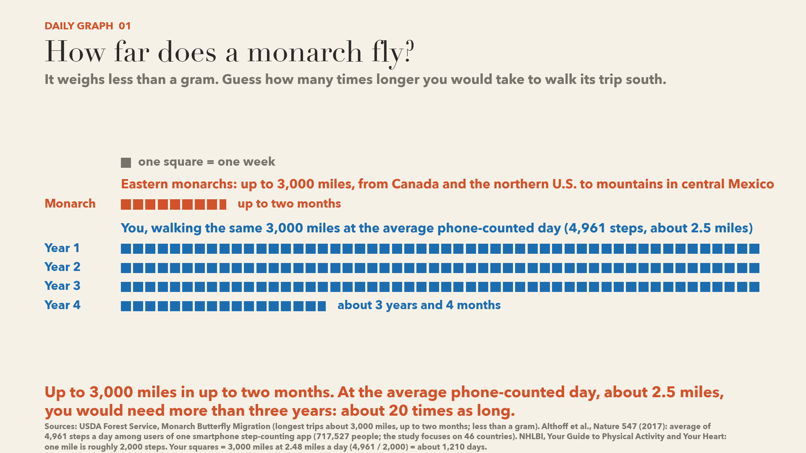
How far does a monarch fly?
What am I looking at?
Eastern monarchs can fly up to 3,000 miles in two months, but you would need more than three years to walk that far. In the fall, monarchs from Canada and the eastern United States start a long trip south. They fly 50 to 100 miles a day, and they spend the winter in fir forests in the mountains of central Mexico. Monarchs that live west of the Rocky Mountains go to the coast of California instead.
The step number comes from a large study of people who used one phone app to count their steps. The average user recorded 4,961 steps a day, about 2.5 miles, and at that pace the walk takes about 20 times as long as the flight. A phone counts steps only when people carry it, so their real walking is probably a little higher. Count the orange squares, and then count the blue squares. Each square stands for one week, and this kind of graph is called a unit chart.
Words on this graph
- unit chart
- A unit chart shows a number as a set of small, equal squares. Each square stands for the same amount, so you can count the squares to compare two numbers.
- migration
- Migration is a long trip that animals make every year at the same season. Monarchs fly south in the fall and come back north in the spring.
- overwintering
- An animal overwinters when it spends the cold months in one place and waits for spring. Eastern monarchs overwinter in fir forests in the mountains of Mexico.
- average
- An average is one number that stands for a whole group. You add all the numbers and then divide by how many numbers there are.
- phone-counted steps
- A phone counts a step when it feels the small bump of each step. It misses every step you take when the phone is on a desk or in a bag on a chair.
Want to know more?
- Monarch Butterfly MigrationprimaryUSDA Forest Service, Celebrating Wildflowers. Where the 3,000 miles, the two months and the less-than-a-gram come from, and where each population spends the winter.
- MigrationscholarlyMonarch Watch. How eastern monarchs find a few mountain tops in central Mexico, and why the fall butterflies are the great-great-grandchildren of the spring ones.
- Monarch ButterfliesexplainerJourney North. Live maps of monarch sightings each fall and spring, sent in by people across North America.
- MonarchsprimaryU.S. Fish and Wildlife Service. Why the eastern and western monarch populations are in trouble, and what the government is doing about it.
- Large-scale physical activity data reveal worldwide activity inequalityscholarlyAlthoff et al., Nature 547 (2017), author PDF. The study behind the 4,961 steps: 717,527 phone users, and which countries walk the most and the least.
- Your Guide to Physical Activity and Your HeartprimaryNational Heart, Lung, and Blood Institute (NIH). The 2,000-steps-a-mile rule of thumb, in the section 'Measuring Your Mileage'.
Monday, November 16, 2026
1 graph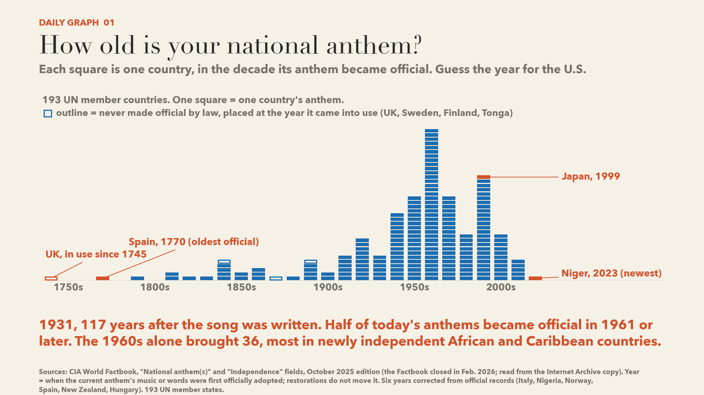
How old is your national anthem?
What am I looking at?
Half of today's national anthems became official in 1961 or later. The 1960s brought 36 of them, more than any other decade. In those years, many countries in Africa and the Caribbean became independent, and 25 of them adopted an anthem within a year of independence. Niger has the newest anthem on the graph. Its parliament chose a new song in 2023.
Some old songs waited a long time for a law. Francis Scott Key wrote the words of the U.S. anthem in 1814, but Congress named it the anthem only in 1931. People in Japan sang Kimigayo from the 1880s, and a law named it in 1999. Spain made its march an official honor march in 1770. Four countries, including the United Kingdom, never passed a law, so their anthems rest on custom.
The graph uses one reference book plus six checked corrections, so a few dates may still be wrong. Find your own country's square. The step from a popular song to a song named by law or decree is called official adoption.
Words on this graph
- national anthem
- A national anthem is a song that a country uses as its own official song. People sing or play it at state events and at sports games.
- official adoption
- A country adopts an anthem officially when a law, a decree or the constitution names the song. Some anthems were sung for many years before this step.
- independence
- A country gains independence when it starts to govern itself and is no longer ruled by another country. Many countries in Africa gained independence around 1960.
- decree
- A decree is an order from a king, a president or a government. It works like a law, but the parliament does not vote on it.
- custom
- A custom is a habit that a whole group shares. People follow it because they have always done it, not because a law tells them to.
Want to know more?
- The Star-Spangled Banner: The LyricsmuseumSmithsonian National Museum of American History. How Francis Scott Key wrote the words in September 1814, the start of the 117-year wait.
- 36 U.S. Code 301: National anthemprimaryLegal Information Institute, Cornell Law School. The one-sentence law that made the Star-Spangled Banner the U.S. anthem, with the 1931 date in its notes.
- The National AnthemprimaryThe Royal Household (royal.uk). The oldest square on the graph, and why the United Kingdom has no authorised version of its anthem.
- Act on National Flag and Anthem (in Japanese)primaryCabinet Office, Government of Japan. The 1999 law that made Kimigayo Japan's anthem after more than a century of use.
- Niger adopts new national anthemjournalismNorth Africa Post. The newest square: why Niger replaced its 1961 anthem in 2023.
- Spotlighting The World Factbook as We Bid a Fond FarewellprimaryCentral Intelligence Agency. The reference book behind the graph, and why it stopped in 2026.
Sunday, November 15, 2026
1 graph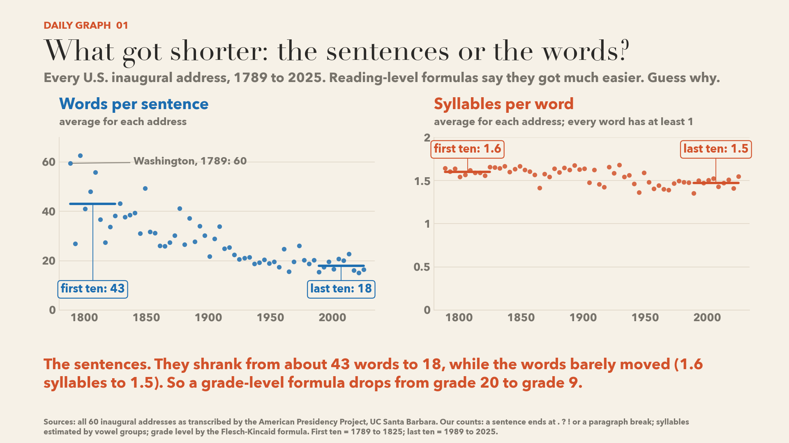
What got shorter: the sentences or the words?
What am I looking at?
Inaugural addresses became easier to read mainly because their sentences got shorter, while their words stayed about the same length. The Flesch-Kincaid grade level turns two averages into a school grade: words per sentence and syllables per word. Each extra word per sentence adds 0.39 of a grade, and each extra syllable per word adds 11.8 grades.
In the first ten addresses, from 1789 to 1825, the average sentence had about 43 words. In the last ten, from 1989 to 2025, it had about 18 words. That drop of 25 words lowers the grade by about 10. The words lost only about 0.13 syllables, and that lowers the grade by about 1.5.
Sentence counts depend partly on punctuation, because old printed texts join long thoughts with semicolons. If you also end a sentence at every semicolon and colon, the average still falls from about 32 words to about 16. The graph shows when sentence length changed, and other sources are needed to explain why. Most of the drop in the Flesch-Kincaid grade level comes from shorter sentences.
Words on this graph
- inaugural address
- An inaugural address is the speech a new United States president gives on the day the president takes the oath of office.
- Flesch-Kincaid grade level
- The Flesch-Kincaid grade level is a formula from a 1975 study for the United States Navy. It uses words per sentence and syllables per word to estimate the school grade a reader needs. A score above 12 means more years of school than high school.
- syllable
- A syllable is one beat of sound in a word. The word "freedom" has two syllables, and the word "constitution" has four syllables.
- words per sentence
- Words per sentence is the number of words in a text divided by the number of sentences in the same text.
- transcript
- A transcript is a written copy of a speech. For the oldest addresses, the punctuation comes from the people who first printed the text.
Want to know more?
- Inaugural Addresses (every address, full text)primaryThe American Presidency Project, UC Santa Barbara. Read any address on the graph in full, from Washington in 1789 to January 2025.
- George Washington, First Inaugural Address, April 30, 1789primaryThe American Presidency Project, UC Santa Barbara. The text behind the top-left dot. Count the words in one of its sentences and compare it with a modern address.
- Derivation of New Readability Formulas for Navy Enlisted Personnel (Kincaid et al., 1975)scholarlyUniversity of Central Florida, STARS. The original report that created the Flesch-Kincaid grade level for Navy training manuals.
- Simpler language, more unity: How inaugural addresses have changed over timejournalismNBC4 Washington. A separate analysis of the same speeches with the same formula. It reaches a similar result and also looks at word choice.
- Song lyrics have become simpler and more repetitive over the last five decades (Scientific Reports, 2024)scholarlyScientific Reports, via PubMed Central. A study of 353,320 English song lyrics. It explains why readability formulas are hard to use on lyrics, which have lines more often than sentences.
- Flesch-Kincaid readability testsoverviewWikipedia. An overview of both Flesch formulas, with the math and the main limits of readability scores.
Saturday, November 14, 2026
1 graph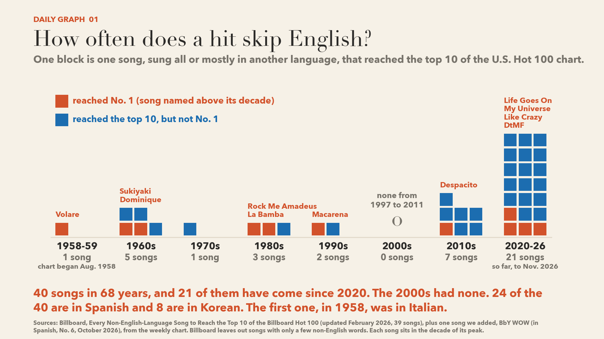
How often does a hit skip English?
What am I looking at?
Songs in other languages rarely reach the top 10 of the main United States song chart, and most that did have come since 2020. Billboard magazine has printed this chart, the Hot 100, every week since August 1958. In those 68 years, 40 top 10 songs were sung all or mostly in a language other than English.
The first was an Italian song in 1958, and a Japanese song reached No. 1 in 1963. The list then stays short for decades, and no song joins it from 1997 to 2011. Since 2020, 21 songs have joined, and most of them are in Spanish or Korean.
The graph does not show why this happened. The chart changed during these years, and Billboard began to count YouTube views in 2013. The first column covers only 1958 and 1959, and the last column stops in November 2026.
Billboard chose which songs count, and it leaves out songs with only a few words in another language. We added one song in Spanish, which reached No. 6 in October 2026, to Billboard's list.
Words on this graph
- Billboard Hot 100
- The Billboard Hot 100 is a weekly list of the 100 most popular songs in the United States. Billboard magazine started it on August 4, 1958. Today the list counts sales, radio plays and online listening together.
- top 10
- The top 10 is the group of songs at positions 1 to 10 on the chart in one week. The chart has 100 positions each week, so most songs on it never reach the top 10.
- peak
- A peak is the highest position a song reaches on the chart. A song that climbs to No. 6 and then falls has a peak of No. 6. On this graph, each song sits in the decade of its peak.
- decade
- A decade is a period of ten years, such as 1990 to 1999. On this graph, two columns are shorter than a decade. The first column starts in August 1958, when the chart began. The last column stops in November 2026.
- sung all or mostly in another language
- Billboard's list includes a song when all or most of its words are in a language other than English. A song in English with a few Spanish or Korean words is not on the list. Billboard made these choices, and this graph follows them.
Want to know more?
- Listen: all 40 songs in one YouTube playlistlistenYouTube. Every song on the graph in chart order, from Volare in 1958 to BbY WOW in 2026. It runs about 2 hours 37 minutes.
- Every Non-English-Language Song to Reach the Top 10 of the Billboard Hot 100primaryBillboard, on Yahoo Entertainment. The full list behind the graph: all 39 songs with the artist, language, peak and date of each one.
- Billboard Hot 100, week of November 14, 2026primaryBillboard Canada. The weekly chart itself. Find the one song in Spanish in this week's top 10 and read its peak position.
- Bittersweet At No. 1: How A Japanese Song Topped The Charts In 1963journalismNPR. The story of Sukiyaki, the Japanese song that reached No. 1 in 1963, and what it meant in Japan.
- Future Classics And Forgotten Novelties: Billboard Introduces The Hot 100journalismuDiscover Music. What was on the first Hot 100 in August 1958.
- Music Business Journal: Modernizing the Hot 100scholarlyBerklee College of Music. How the chart's rules changed when downloads, streaming and YouTube views were added.
- Billboard Hot 100overviewWikipedia. An overview of the chart's history and how it is put together.
Friday, November 13, 2026
1 graph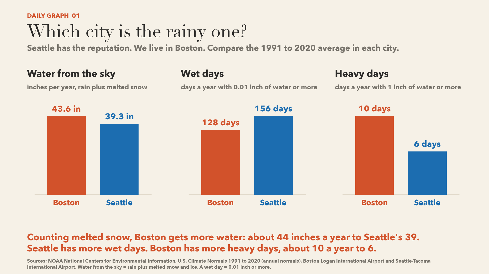
Which city is the rainy one?
What am I looking at?
Boston gets more precipitation than Seattle in an average year, about 43.6 inches to 39.3 inches. Precipitation is all the water that falls from the sky, including rain and melted snow and ice.
Seattle has its rainy reputation because it is wet on more days, about 156 days a year to Boston's 128. Most of Seattle's wet days come in fall and winter. Boston has fewer wet days, but it has more heavy days, with an inch of water or more.
Snow also matters in this comparison. Boston gets about 49 inches of snow a year, and Seattle gets about 6 inches. Weather forecasters use a rough guide that ten inches of snow melts down to one inch of water. By that guide, Boston's snow adds about five inches of water, which is close to the gap between the two cities.
All of these numbers come from airport weather stations and are averages for the years 1991 to 2020. That kind of 30-year average is called a climate normal.
Words on this graph
- climate normal
- A climate normal is the 30-year average of one weather measurement at one station. The current U.S. climate normals cover the years 1991 to 2020, and NOAA updates them every ten years.
- precipitation
- Precipitation is all the water that falls from the sky as rain, snow, sleet or hail. Weather stations melt any snow or ice in the gauge and then measure the water.
- inch of rain
- An inch of rain is enough water to cover flat ground one inch deep, about 2.5 centimeters, if none of it drains away or soaks in. In an average year, Boston has about 10 days with an inch of water or more, and Seattle has about 6.
- wet day
- A wet day is a day with 0.01 inch of precipitation or more. Weather stations report any smaller amount as a trace.
- heavy day
- A heavy day on this graph is a day with 1 inch of precipitation or more. It counts days only, so it does not show how much of a city's yearly water falls on those days.
Want to know more?
- U.S. Climate NormalsprimaryNOAA National Centers for Environmental Information. What a climate normal is, how NOAA calculates the 1991 to 2020 averages, and where to find them for any station.
- Annual normals, Boston Logan International Airport (data file)primaryNOAA National Centers for Environmental Information. The raw numbers behind Boston's bars, including snowfall and days with half an inch or two inches of water.
- Annual normals, Seattle-Tacoma International Airport (data file)primaryNOAA National Centers for Environmental Information. The same file for Seattle, with wet days season by season.
- PrecipitationexplainerNOAA JetStream. How rain and snow form, and how rain gauges measure them.
- What Are Snow Ratios?primaryNational Weather Service, La Crosse. Why ten inches of snow can melt to more or less than one inch of water.
- Climate of SeattleoverviewWikipedia. An overview of Seattle's clouds, drizzle and rain shadow.
Wednesday, November 11, 2026
10 graphs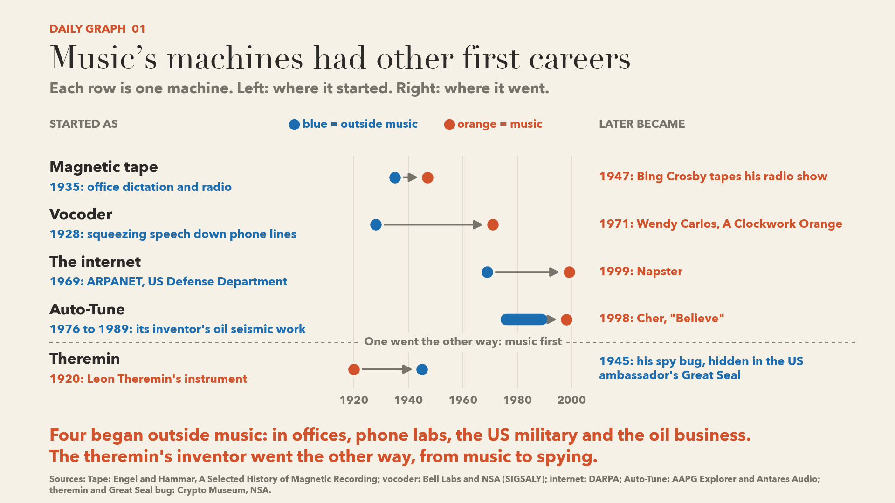
Music’s machines had other first careers
What am I looking at?
Four of these five music tools began in other jobs: offices, phone labs, the military and the oil business. AEG showed the Magnetophon tape recorder in Berlin in 1935 and sold it for office dictation and radio work. Homer Dudley started the vocoder at Bell Labs in 1928 to fit more speech down a phone line. ARPANET, the network that grew into the internet, was paid for by the US Defense Department in 1969.
Auto-Tune is a special case. The software came out in 1997, and it was made for music. Its inventor, Andy Hildebrand, had spent 1976 to 1989 studying echoes from underground rock for oil companies, and he used the same math again. The theremin row runs the other way. Leon Theremin built his instrument in 1920 and later a hidden listening device for Soviet intelligence.
Each orange dot marks a famous music moment, not the first musical use. Tape recorded an orchestra in 1936. The move from one field to another is called technology transfer.
Words on this graph
- Vocoder
- A device that splits a voice into frequency bands and rebuilds it. In music, it lets a synthesizer 'sing' the words a person speaks.
- Office dictation
- Speaking a letter into a recorder so a typist can play it back and type it later.
- ARPANET
- A computer network paid for by ARPA, a US Defense Department research agency. It sent its first message in 1969 and grew into the internet.
- Seismic work
- Sending sound waves into the ground and studying the echoes to map rock layers. Oil companies use it to decide where to drill. The same math can find the pitch of a voice.
- Theremin
- An electronic instrument played without touch. Your hands move near two antennas to change pitch and volume.
- Great Seal
- The national emblem of the United States, an eagle holding arrows and an olive branch. A carved wooden copy given to the US ambassador in Moscow had a listening device inside.
- Technology transfer
- When a tool made for one field is adopted by another, such as military research reaching music studios.
Want to know more?
- A Selected History of Magnetic RecordingscholarlyFriedrich Engel and Peter Hammar, ed. Richard L. Hess. How tape began in Berlin in 1935, the 1936 orchestra recording, and how it reached Bing Crosby.
- Cryptography and Cyborg Speech: The Strange Journey of the VocoderjournalismRed Bull Music Academy Daily. From 1928 telephone research and a secret wartime phone link to pop records.
- VocodersprimaryWendy Carlos (wendycarlos.com). The composer of A Clockwork Orange explains the vocoder and how she used it.
- ARPANETprimaryDARPA. The Defense Department agency's own account of the 1969 network.
- From Rocks to Rock, His Ideas Sound GoodjournalismAAPG Explorer. A geology magazine profiles the oil scientist who built Auto-Tune.
- The Great Seal Bug (The Thing)museumCrypto Museum. How the theremin's inventor built a listening device with no battery.
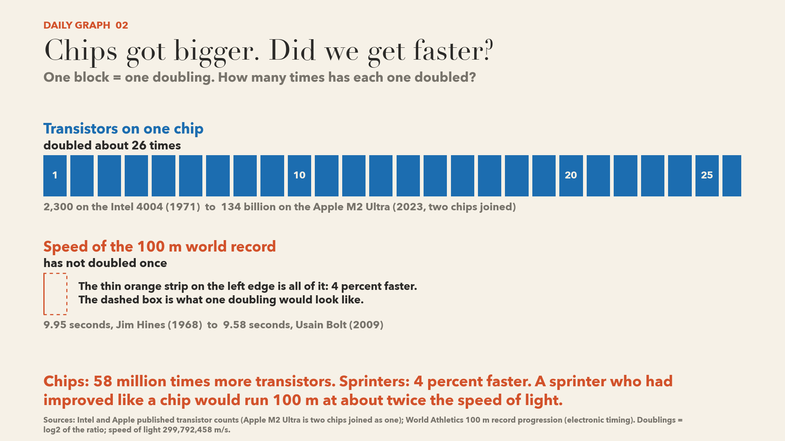
Chips got bigger. Did we get faster?
What am I looking at?
Transistor counts on a chip doubled about 26 times between 1971 and 2023, and the 100 m record speed has not doubled once. Each block on the graph stands for one doubling: two times, then four, then eight. After 26 doublings the count is 58 million times larger, because each doubling multiplies the whole total.
Engineers did this by shrinking the transistor, a tiny switch, so that more of them fit on the same piece of silicon. A sprinter has no part to shrink. Researchers who studied 3,263 world records found that most events are now close to a human limit.
The two rows also measure different things. The top row counts parts on a chip. The bottom row measures average speed over 100 metres, which rose from 10.05 metres per second in 1968 to 10.44 in 2009. No runner could improve like a chip, since nothing travels faster than light. The last line of the graph is a way to feel the size of 26 doublings.
Words on this graph
- Doubling
- Multiplying by two. Ten doublings is about 1,000 times, twenty is about a million, and 26 is about 58 million.
- Transistor
- A tiny electronic switch that is either on or off. A computer chip is billions of them working together.
- log2
- The small print uses this to count doublings. The log2 of a number is how many times you double 1 to reach it: log2 of 8 is 3.
- Two chips joined
- Apple builds the M2 Ultra by connecting two M2 Max pieces of silicon in one package. A single piece has half the transistors, which is one doubling fewer.
- Electronic timing
- Timing started by the gun and stopped by a camera at the finish, to one hundredth of a second. World records have required it since 1977, and the first such record is the 9.95 from 1968.
- Average speed and top speed
- 100 metres in 9.58 seconds is an average of 10.44 metres per second. A sprinter starts from zero, so the peak inside the race is higher: 12.32 metres per second for the 2009 record.
- Speed of light
- 299,792,458 metres per second. In physics nothing with mass can reach it, so the last line of the graph describes something that cannot happen.
Want to know more?
- 1965: Moore's Law Predicts the Future of Integrated CircuitsmuseumComputer History Museum. What Gordon Moore predicted in 1965 and why he slowed the pace to a doubling every two years in 1975.
- What is Moore's Law?explainerOur World in Data. Charts of transistor counts since 1970 and other things in computing that have kept doubling.
- Chip Hall of Fame: Intel 4004 MicroprocessorjournalismIEEE Spectrum. The story of the first block on the graph: 2,300 transistors, built for a Japanese calculator company.
- Hines, first man to break 10 seconds for 100m, diesprimaryWorld Athletics. The 1968 race that starts the orange row, and why its record lasted 15 years.
- The Citius End: World Records Progression Announces the Completion of a Brief Ultra-Physiological QuestscholarlyPLoS ONE (Berthelot et al., 2008). A study of 3,263 world records that finds most sports are near a human limit.
- Multicomponent Velocity Measurement for Linear Sprinting: Usain Bolt's 100 m World-Record AnalysisscholarlyBioengineering (Stuhec et al., 2023). Laser measurements of the 9.58 race, showing the peak of 12.32 metres per second near the halfway point.
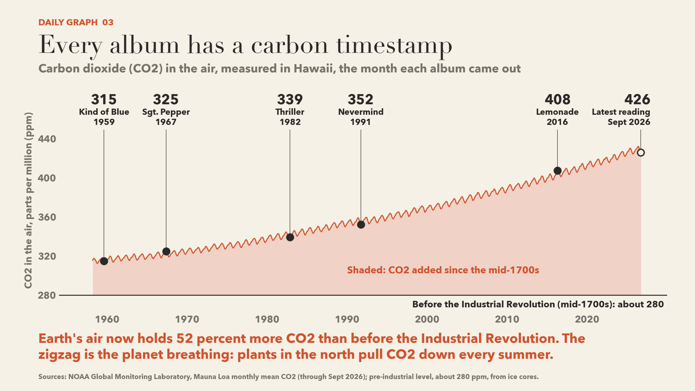
Every album has a carbon timestamp
What am I looking at?
Each dot shows how much carbon dioxide was in the outdoor air in the month an album came out. Scientists have measured that air every month since March 1958 at Mauna Loa, a volcano in Hawaii. The unit is ppm, or parts per million: 426 ppm means 426 molecules of carbon dioxide in every million molecules of air.
The dark line under the graph marks 280 ppm. Air bubbles trapped in old ice show that this was the level before the Industrial Revolution began in the mid-1700s. The shaded area is everything above 280, so it shows the carbon dioxide added since the mid-1700s. The hollow ring is not an album. It is the latest reading, 426 ppm in September 2026, which is 52 percent higher than 280.
The curve rises and falls every year. Northern plants take in carbon dioxide as they grow in summer, so the level drops until about October and climbs again until May. Find the album nearest your birth year and read the ppm value that this graph calls its carbon timestamp.
Words on this graph
- ppm (parts per million)
- A way to count very small amounts. 426 ppm means 426 molecules of carbon dioxide in every million molecules of air.
- Keeling Curve
- The name of this Mauna Loa CO2 record. Charles David Keeling of the Scripps Institution of Oceanography started it in 1958, and NOAA has run its own measurements there since 1974.
- Pre-industrial level
- The amount of CO2 in the air before the Industrial Revolution began in the mid-1700s, about 280 ppm. Scientists measure it from air bubbles trapped in old ice.
- Ice core
- A long cylinder of ice drilled out of an ice sheet. Tiny bubbles in it hold samples of air from the year the snow fell.
- Seasonal cycle
- The yearly zigzag in the curve. Northern plants take in CO2 as they grow in summer, so the level falls until about October, then rises again until May.
- Monthly mean
- The average of all the readings in one month. Each point on the curve is one month.
Want to know more?
- Trends in Atmospheric Carbon Dioxide: Mauna LoaprimaryNOAA Global Monitoring Laboratory. The live graph and the latest monthly number, updated every month.
- Mauna Loa monthly mean CO2 data (text file)primaryNOAA Global Monitoring Laboratory. Every month since March 1958, so you can look up the number for any album you like.
- The Keeling CurvescholarlyScripps Institution of Oceanography, UC San Diego. The record that started in 1958, with the newest daily reading.
- Climate Change: Atmospheric Carbon DioxideexplainerNOAA Climate.gov. Where the 280 ppm pre-industrial number comes from and why the level keeps rising.
- Aqua/AIRS Carbon Dioxide with Mauna Loa Carbon Dioxide (2014 update)explainerNASA Scientific Visualization Studio. An animation of the yearly zigzag and why the Northern Hemisphere drives it.
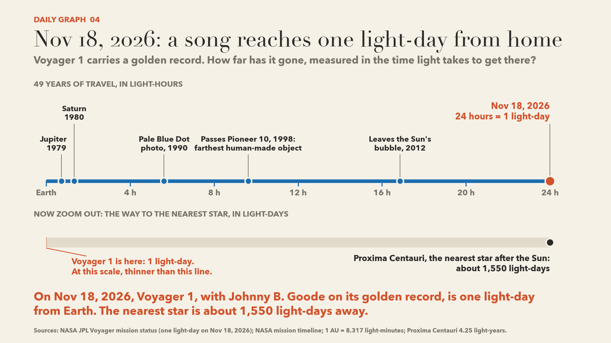
Nov 18, 2026: a song reaches one light-day from home
What am I looking at?
A light-day is the distance light travels in 24 hours, about 25.9 billion kilometers, and NASA calculates that Voyager 1 will be that far from Earth on November 18, 2026. The top ruler counts the trip in light-hours. Voyager 1 launched in September 1977 and passed Jupiter in 1979 and Saturn in 1980. In 1990 it turned its camera back and took the Pale Blue Dot photo of Earth. In 2012 it crossed the heliopause, the edge of the bubble of charged gas around the Sun.
The spacecraft carries a golden record with 27 pieces of music, including Chuck Berry's "Johnny B. Goode." A radio command from Earth will need a full day to reach it, and the reply will need another day to come back.
The bottom ruler runs to Proxima Centauri, the nearest star after the Sun, about 1,550 light-days away. Voyager 1 covered one light-day in 49 years. Multiply 49 by 1,550 to estimate the full trip at that pace. The whole top ruler, end to end, is one light-day.
Words on this graph
- light-day
- The distance light travels in one day: about 25.9 billion kilometers. A light-hour is one twenty-fourth of that. These units measure distance, not time.
- astronomical unit (AU)
- The average distance from Earth to the Sun, about 150 million kilometers. Light needs about 8.3 minutes to cross it.
- the Sun's bubble (heliosphere)
- The region filled by charged gas flowing out from the Sun. Its edge is called the heliopause. Past it, a spacecraft is in interstellar space, the space between the stars.
- golden record
- A gold-plated copper record on each Voyager spacecraft, with greetings, sounds and 27 pieces of music from around the world.
- Pale Blue Dot
- A 1990 photo of Earth taken by Voyager 1 from about 6 billion kilometers away, where Earth is a single bright speck.
- Pioneer 10
- A NASA spacecraft launched in 1972, the first to fly past Jupiter. It was the farthest human-made object until Voyager 1, which travels faster, passed it in 1998.
- Proxima Centauri
- The nearest star to the Sun, about 4.25 light-years away. It is a small red star too dim to see without a telescope.
Want to know more?
- Where are Voyager 1 and Voyager 2 now?primaryNASA. NASA's countdown and the exact moment of the one light-day milestone.
- Voyager 1primaryNASA. The full mission timeline: launch, Jupiter, Saturn, passing Pioneer 10, interstellar space.
- Golden Record Sounds and MusicprimaryNASA. Every track on the record, from Bach to Chuck Berry, with running times.
- Voyager 1's Pale Blue DotprimaryNASA. The 1990 photo of Earth and the story behind it.
- Questions and Answers with Dr. Ed StoneprimaryNASA. How scientists decided Voyager 1 had left the Sun's bubble, and why the exact day is uncertain.
- Voyager 1 is nearly one light-day from Earth. What's out there?journalismScience News. What the spacecraft is still measuring, and what lies ahead of it.
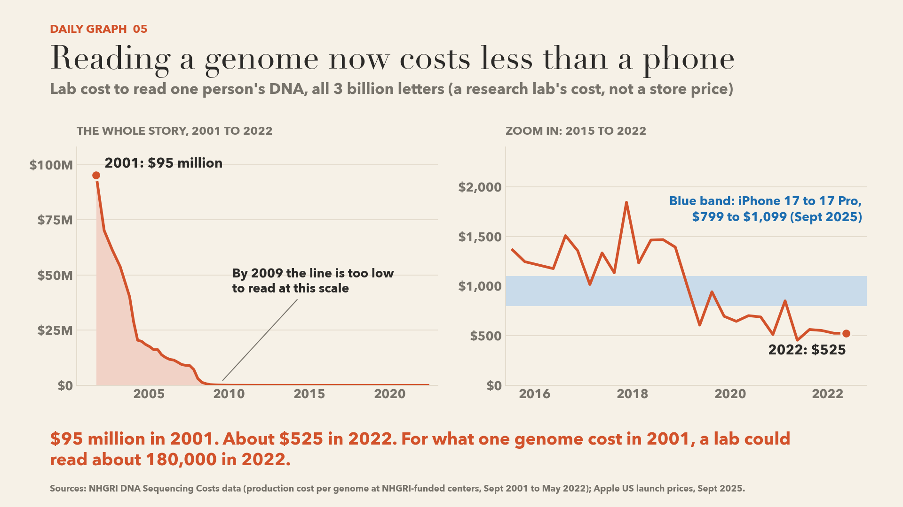
Reading a genome now costs less than a phone
What am I looking at?
Reading one human genome cost a research lab about $95 million in 2001 and about $525 in 2022. The numbers come from the National Human Genome Research Institute. They track what its funded labs spend to produce the raw data: chemicals, staff, machines and power. They are a lab's cost, not a price a person pays, and they leave out checking and interpreting the data.
The left panel shows the whole fall in millions of dollars. Around 2008, labs moved to machines that read millions of DNA pieces at once. After that the line sits so close to zero that you cannot read it. The right panel zooms in on the last seven years, and its scale runs in single dollars.
The blue band marks 2025 iPhone launch prices. Find the year the red line first drops below the band. Then divide the 2001 cost by the 2022 cost. The answer, about 180,000, measures how far the cost fell after next-generation sequencing.
Words on this graph
- Genome
- All the DNA in one living thing. A human genome is about 3 billion letters long, written with only four letters: A, C, G and T.
- Sequencing
- Reading the order of the letters in a piece of DNA with a machine.
- Production cost
- What it costs a lab to make something: materials, staff, machines and power. A price is what a buyer pays, and it can be higher or lower.
- Next-generation sequencing
- Machines, in wide use from about 2008, that read millions of short DNA pieces at the same time instead of a few at a time.
- Zoom panel
- A second chart that shows a small part of the first one on a bigger scale. Here the left axis counts in millions of dollars and the right axis counts in single dollars.
- NHGRI
- The National Human Genome Research Institute, the United States government institute that led the Human Genome Project and still funds large sequencing labs.
Want to know more?
- DNA Sequencing Costs: DataprimaryNational Human Genome Research Institute. The dataset behind the red line, with what the costs include and leave out.
- The Cost of Sequencing a Human GenomeprimaryNational Human Genome Research Institute. Explains why cost and price differ and what the first human genome really cost.
- Human Genome Project Fact SheetprimaryNational Human Genome Research Institute. The 1990 to 2003 project that read the first human genome.
- DNA sequencing at 40: past, present and future (Nature, 2017)scholarlyShendure et al., Nature 550, doi:10.1038/nature24286 (NHGRI copy, PDF). A history of sequencing machines, including the move to massively parallel sequencing.
- Illumina ushers in $200 genome with launch of new sequencersjournalismMedTech Dive. What happened after the data end in 2022, and the conditions behind a $200 claim.
- $1,000 genomeoverviewWikipedia. An overview of the long race to a thousand-dollar genome.
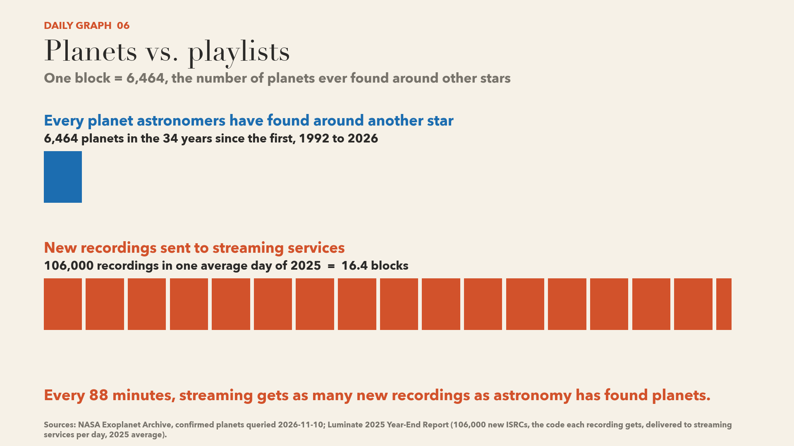
Planets vs. playlists
What am I looking at?
Streaming services receive more new recordings in 88 minutes than astronomers have confirmed planets in 34 years. NASA's Exoplanet Archive lists 6,464 confirmed planets around other stars. The first two were confirmed in 1992, around a pulsar. Astronomers had been searching for years before that with no confirmed result.
On the music side, the data company Luminate counted 106,000 recordings delivered to streaming services on an average day in 2025. Each recording carries its own code. A remix, a radio edit or a live take of one song gets a separate code, and some uploads are made with AI tools. So the orange blocks count recordings, not new songs.
Check the 88 minutes yourself. Divide 6,464 by 106,000, then multiply by the 1,440 minutes in a day. Then look up the code on one of your own tracks. That code is the ISRC.
Words on this graph
- Exoplanet
- A planet that orbits a star other than our Sun. The graph counts confirmed planets, which means astronomers have ruled out other explanations for the signal.
- Pulsar
- The small, spinning core left after a large star explodes. It sends out radio pulses as regular as a clock. Tiny changes in that timing revealed the first two planets in 1992.
- ISRC
- International Standard Recording Code: a 12-character code that identifies one sound recording. A remix or a new edit of the same song gets its own code, so ISRCs count recordings, not songs.
- Streaming service
- A company that plays music over the internet, which industry reports call a DSP (digital service provider). Spotify, Apple Music and YouTube are streaming services.
- Average day
- Luminate's figure for 2025 is a daily average across the year, so single days run higher or lower.
- Unit block
- Each square on the graph stands for the same amount, here 6,464. Count the squares to compare the two rows.
Want to know more?
- NASA Exoplanet ArchiveprimaryNASA / Caltech IPAC. The live count of confirmed planets and the table of discoveries by year behind the blue block.
- 2025 Year-End Music ReportprimaryLuminate. Source of the 106,000-a-day figure, plus how few of those recordings ever reach 1,000 streams. A large PDF (about 80 MB).
- International Standard Recording Code (ISRC)primaryIFPI. What the code is, who assigns it, and why it identifies recordings and not songs.
- Who Really Discovered the First Exoplanet?journalismScientific American. An astronomer on the searches of the 1980s and why 'first planet' has more than one answer.
- How to find an exoplanetexplainerEuropean Space Agency. The methods behind the 6,464: star wobbles, dips in starlight, direct images and pulsar timing.
- Music streaming platforms now host quarter of a BILLION tracks. Where does it end?journalismMusic Business Worldwide. What the daily flood means for artists: 253 million tracks in total, and Deezer's report that about a third of its daily uploads are fully AI-made.
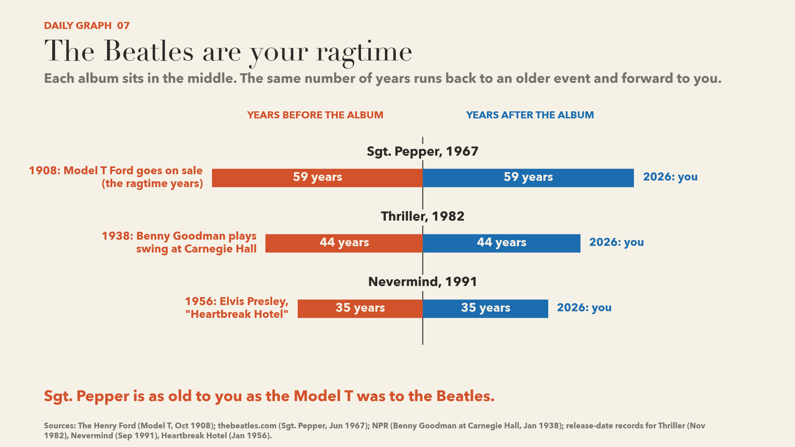
The Beatles are your ragtime
What am I looking at?
Sgt. Pepper came out in 1967, 59 years before 2026, and in 1967 the Model T Ford was already 59 years old. Each row of the graph puts one famous album on the center line. The blue bar runs forward from the album to you. The orange bar runs the same number of years back to an older event.
In 1967, the Model T and ragtime piano came from the time of the Beatles' grandparents. Thriller came out in 1982, 44 years after Benny Goodman played swing at Carnegie Hall, and Thriller is now 44 years behind you. Nevermind came out in 1991, 35 years after Elvis Presley released "Heartbreak Hotel."
The graph counts whole calendar years, so a gap can be a few months longer or shorter than the number on the bar. Try it yourself. Pick an album from the year you were born, count back the same number of years, and find what people were playing then. Both bars in each row measure the same time span.
Words on this graph
- Ragtime
- American piano music with a steady left-hand beat and an offbeat, syncopated melody. Its best-known composer is Scott Joplin, and it was most popular from about 1897 to 1917.
- Swing
- Big-band jazz for dancing and listening, played by bandleaders such as Benny Goodman. It was most popular in the late 1930s and early 1940s.
- Model T Ford
- A low-priced car that Ford began selling in October 1908. It put many ordinary American families on the road, and it stands here for daily life in that era.
- Carnegie Hall
- A concert hall in New York known for classical music. Benny Goodman's 1938 concert there is remembered as the night jazz was accepted on the concert stage.
- Sgt. Pepper
- Short for Sgt. Pepper's Lonely Hearts Club Band, the album the Beatles released in June 1967.
Want to know more?
- Ford's Model T: A Car for the Great MultitudemuseumThe Henry Ford. The museum's history of the car, with the October 1, 1908 launch date.
- Sgt. Pepper's Lonely Hearts Club BandprimaryThe Beatles (official site). The band's own album page and release date.
- How Benny Goodman Orchestrated The Most Important Concert In Jazz HistoryjournalismNPR (via KUNC). Why the 1938 Carnegie Hall concert mattered for jazz.
- Benny Goodman brings jazz to Carnegie HalljournalismHistory.com. A short account of the concert night, January 16, 1938.
- RagtimeexplainerBallad of America. What ragtime is and when it was popular.
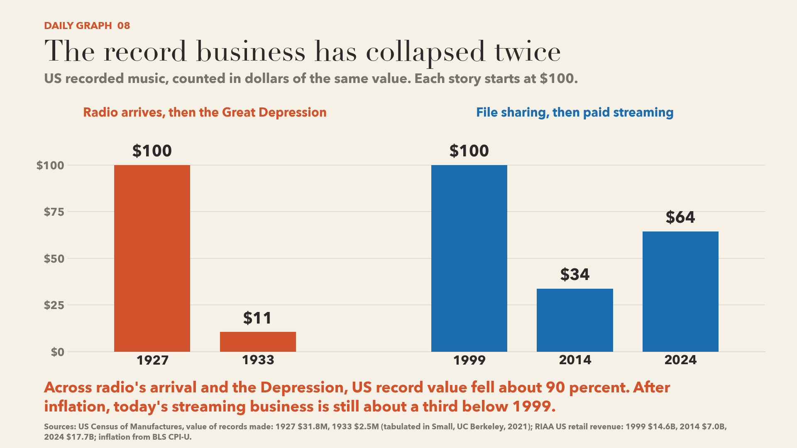
The record business has collapsed twice
What am I looking at?
The US record business lost most of its value twice, first around 1930 and again after 1999. Each group of bars starts at $100, so the other bars show how much of every $100 was left. Every figure has had an inflation adjustment, which means each one is divided by the price level for its year.
Census counts put the value of records made at $31.8 million in 1927 and $2.5 million in 1933. Prices also fell in those years, so the real drop is about 90 percent. Radio spread into homes in the same years as the Great Depression, and historians still argue about which one hurt more.
The second fall began in 1999, when Napster let people share song files without paying. Revenue fell from $14.6 billion in 1999 to $7.0 billion in 2014, and paid streaming lifted it to $17.7 billion in 2024. A 2024 dollar buys about half of what a 1999 dollar bought. So 2024 comes to $64 for every $100 in 1999 after the inflation adjustment.
Words on this graph
- Starts at $100
- A way to compare two businesses of different sizes. The first year in each group is set to $100, and each later bar shows how much of that $100 was left. $64 means 64 percent of the starting value.
- Dollars of the same value
- Dollars adjusted for inflation, also called real dollars. A dollar in 1999 bought more than a dollar in 2024, so each figure is divided by the price level for its year before the years are compared.
- Consumer Price Index (CPI-U)
- A US government measure of the average price of things city households buy, published by the Bureau of Labor Statistics since 1913. It is the price level used for the inflation adjustment here.
- Census of Manufactures
- A US government count of what factories produced, taken every two years in the 1920s and 1930s. It gives the value of records made, not records sold in shops.
- Retail revenue
- The RIAA's estimate of what listeners paid in total for recorded music in a year, including streaming subscriptions, vinyl and downloads. The RIAA is the trade group of the US record labels.
- File sharing
- Copying song files from one person's computer to another over the internet without paying. Napster made it common in 1999.
Want to know more?
- Audible Struggle: Phonographs, Records, and Musical Manufactures in the United States, 1899-1939scholarlyShadrick Small, UC Berkeley (Social Science History Association 2021 paper). The Census table behind the orange bars, and an argument that the radio story is overstated.
- 2024 Year-End Revenue ReportprimaryRIAA. The official US numbers for streaming, vinyl and total revenue in 2024.
- CPI Inflation CalculatorprimaryUS Bureau of Labor Statistics. Type in any dollar amount and two years to do the inflation adjustment yourself.
- With $15bn in revenue, 2021 was the US record industry's biggest ever year (kind of)journalismMusic Business Worldwide. Why a record year in dollars is still below 1999 after inflation.
- Record Cultures, IntroductionscholarlyKyle Barnett, University of Michigan Press. How the record, radio and film industries merged in the 1920s and 1930s.
- The Industrialization of Popular MusicscholarlySimon Frith (course reading, DePaul University). A classic essay on how technology and money shaped popular music, including the 1930s slump.
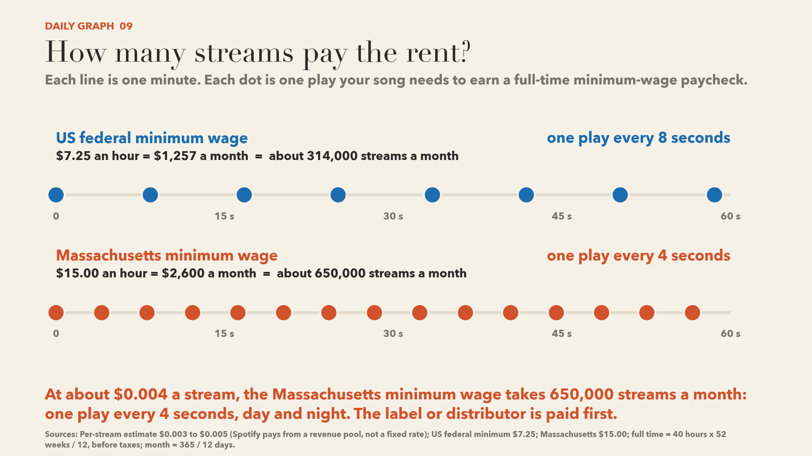
How many streams pay the rent?
What am I looking at?
A song needs one play every four seconds, all month, to match a full-time minimum-wage job in Massachusetts. The state minimum is $15.00 an hour, and 40 hours a week for 52 weeks comes to $2,600 a month before taxes. At $0.004 a stream, that is 650,000 streams. A month has 2,628,000 seconds, so the plays land four seconds apart. The federal minimum of $7.25 needs 314,000 streams, one every eight seconds.
Spotify does not pay a fixed price per play. Each month it puts part of its income from subscriptions and ads into a pool and splits the pool by share of streams. The $0.004 figure is an outside estimate of the average, and it probably runs from $0.003 to $0.005.
The money goes first to the label or distributor that delivered the track. The artist is paid from there under a contract. A track also earns nothing until it reaches 1,000 streams in a year. What a song earns depends on its stream share.
Words on this graph
- Minimum wage
- The lowest hourly pay an employer may legally offer. The federal floor is $7.25. A state can set a higher one, and Massachusetts sets $15.00.
- Full time
- Here, 40 hours a week for all 52 weeks of the year, divided by 12 to get one month's pay.
- Before taxes (gross pay)
- Money earned before taxes and other deductions come out. The graph compares gross wages with gross streaming income.
- Per-stream estimate
- An average worked out by outside observers: money paid out divided by streams counted. Spotify publishes no such rate, so the figure is a range, $0.003 to $0.005.
- Stream share
- Your part of all the streams on a service in one country in one month. Spotify splits its royalty pool by this share, so a single stream has no fixed price.
- Distributor
- A service that delivers an independent artist's tracks to Spotify and other platforms and passes the royalties back, sometimes for a fee or a percentage.
Want to know more?
- Understanding Spotify royaltiesprimarySpotify for Artists. Spotify's own account of the royalty pool and stream share, and why there is no per-stream rate.
- Track monetization eligibilityprimarySpotify for Artists. The rule that a track needs at least 1,000 streams in 12 months before it earns recorded royalties.
- Loud & ClearprimarySpotify. Spotify's yearly royalty report: total payouts and how many artists reach each level of income.
- Calculating Spotify's per-stream payout: harder than you might guessjournalismHypebot. Where the $0.003 to $0.005 estimate comes from, and why country, plan type and deal change it.
- Minimum WageprimaryUS Department of Labor, Wage and Hour Division. The federal minimum of $7.25 an hour and the date it took effect.
- State Minimum Wage LawsprimaryUS Department of Labor, Wage and Hour Division. Compare Massachusetts with every other state's minimum wage, then redo the graph's math for your home state.
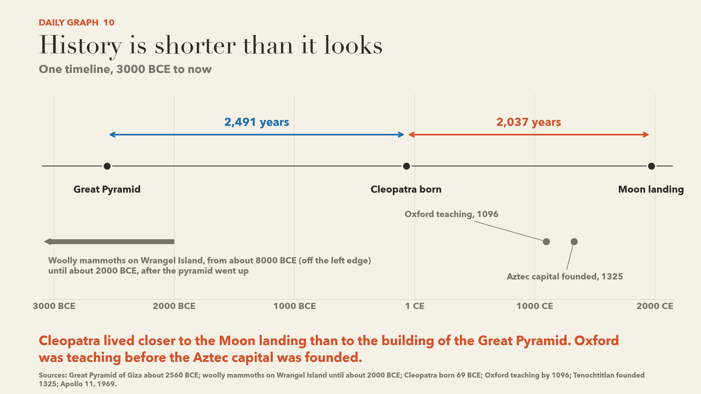
History is shorter than it looks
What am I looking at?
Cleopatra was born closer in time to the Moon landing than to the building of the Great Pyramid. The pyramid went up at Giza for the king Khufu near 2560 BCE. Cleopatra VII was born in 69 BCE, 2,491 years later. Apollo 11 landed in 1969, 2,037 years after her birth. The calendar has no year zero, so to count across the line between BCE and CE, you add the two numbers and subtract one.
The other two lanes work the same way. The last woolly mammoths lived on Wrangel Island, north of Siberia, and died out roughly 500 years after the pyramid was finished. The University of Oxford dates its first teaching to 1096, and the Mexica founded Tenochtitlan, the Aztec capital, in 1325.
Pick two dates from the chart and find the gap between them. Then place a third event from your own country on the same line. Putting events in order and measuring the gaps between them is called chronology.
Words on this graph
- BCE and CE
- BCE means Before Common Era, and CE means Common Era. They count years the same way as the older BC and AD. BCE years count down, so 2560 BCE is earlier than 69 BCE.
- No year zero
- The calendar goes from 1 BCE straight to 1 CE. To find the gap between a BCE year and a CE year, add the two numbers and subtract one: 69 + 1969 - 1 = 2,037.
- Wrangel Island
- This island lies in the Arctic Ocean, north of Siberia. Rising seas cut it off from the mainland about 10,000 years ago, and the last known woolly mammoths lived there.
- Radiocarbon dating
- A way to date bones and other once-living material by measuring how much carbon-14 is left in them. It is how scientists know when the last mammoths lived, and it always comes with a margin of error.
- Teaching at Oxford by 1096
- Oxford has no founding date. 1096 is the year the university gives for the earliest teaching there. The first teacher known by name, Theobald of Etampes, lectured there about 1117.
- Aztec capital
- Tenochtitlan was the city the Mexica, often called the Aztecs, built on an island in Lake Texcoco. Mexico City stands on the same site today.
Want to know more?
- Old Kingdom monuments: the Pyramids of GizamuseumRosicrucian Egyptian Museum. A museum's short guide to when the Giza pyramids were built and for whom.
- The last mammoths died on a remote islandscholarlyUniversity of Helsinki, Finnish Museum of Natural History. The researchers' own summary of how the Wrangel Island mammoths lived for 7,000 years after the seas rose and then died out 4,000 years ago.
- The last woolly mammoths offer new clues to why the species went extinctjournalismScience News. Reports the 2024 genome study of the last mammoths and what it says about their end.
- Cleopatra VII Philopator (person record)museumMuseum of New Zealand Te Papa Tongarewa. A museum record with Cleopatra's birth and death dates.
- The University of Oxford (A History of the County of Oxford, vol. 3)scholarlyVictoria County History, British History Online. The standard history of how the university began, with the first named teachers at Oxford in the early 1100s.
- Apollo 11primaryNASA. NASA's mission page for the first crewed Moon landing, July 20, 1969.